Report, seperti halnya form, digunakan untuk merepresentasikan hasil olahan data menjadi informasi yang siap di cetak di lembaran kertas.
Mengapa kita perlu membuat Report ?.
Jika Atasan Anda meminta laporan penjualan kepada anda, tentunya anda akan segera menyiapkannya anda bisa mencetak table penjualan sebagai laporan tetapi hasil cetakannya tidak seperti laporan yang diinginkan. Cara yang terbaik adalah dengan membuat Laporan Penjualan tersebut dengan menggunakan Report. Dengan Report kapanpun Laporan dibutuhkan maka dengancepat kita dapat menyediakannya.
Bagaiamana Cara Membuat ?
Report dapat dibuat dengan dua cara yaitu maual dan wizards. Pada tutorial terdapat beberapa contoh pembutan report., anda tinggal mengikuti langkah-langkah pembuatannya.
Pembuatan Report
Report Struk Penjualan
digunakan untuk mencetak struk barang-barang yang dibeli karyawan.
1. Sebelum kita buat reportnya terlebih dulu kita buat sumberdata untuk report ini. Sumber data sebuah report bisa dari table atau dari Query. Untuk keperluan ini kita akan membuat Query Struk, Berikut Design untuk Query Struk, Simpan dengan nama qry_Struk
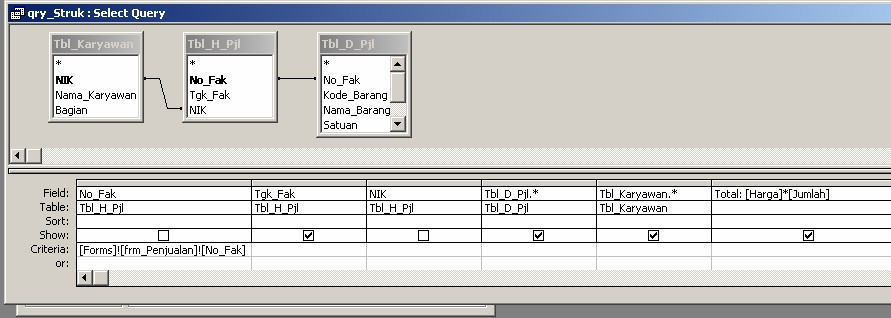
2. Pada Jendela Database klik Report. Klik New, muncul jendela Report Wizard ikuti langkah-langkah seperti gambar berikut ini
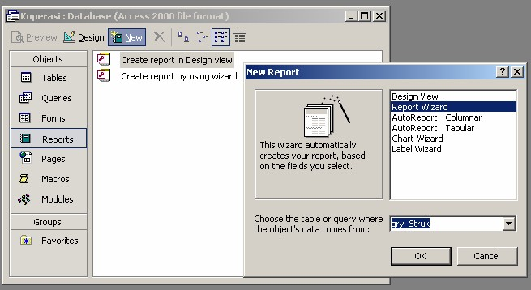
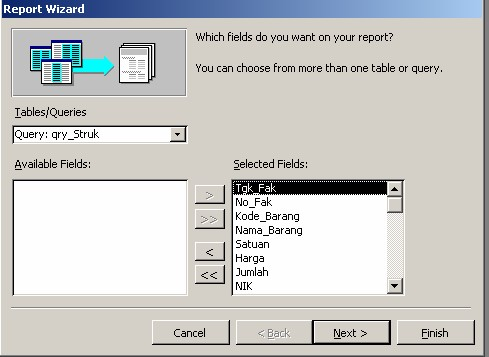
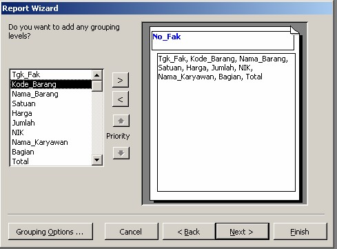
Klik dua kali No_Fak untuk menghasilkan gambar seperti diatas baru klik next
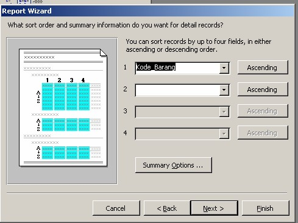
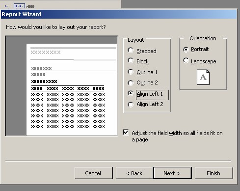
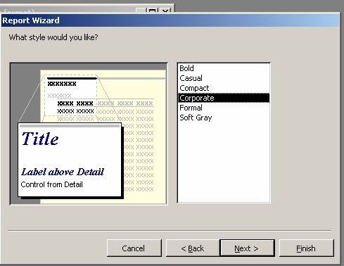
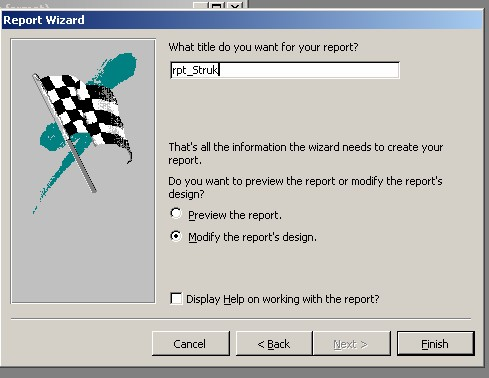
Klik Finish, akan tampil design report struk
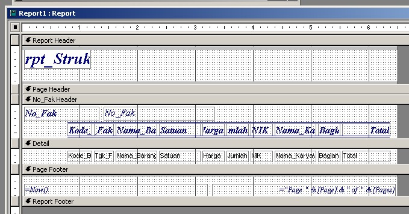
Atur posisi kontrol-kontrol yang ada pada report ssehingga menjadi seperti ini
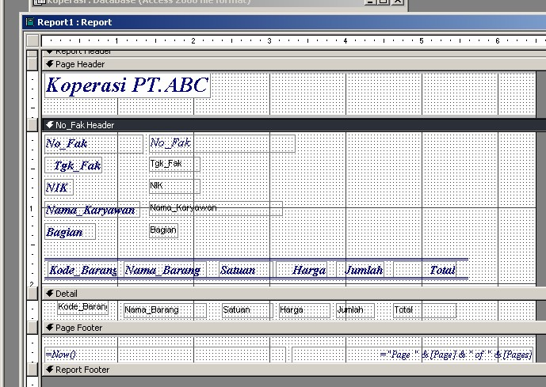
Pada No_Fak Header klik kanan pilih Sorting and Grouping Pada No_Fak Set Group Footernya Yes (Agar No-Fak Footer ditampilkan sebagi temapat text box untuk Total biaya yang harus dibayar)
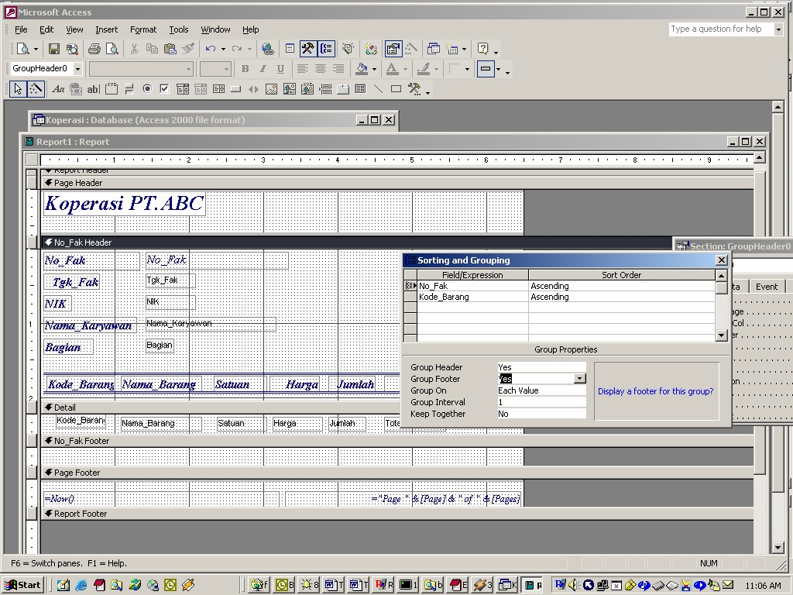
Pada No_Fak Footer Tambahkan Textbox Pada labelnya ketikan Total Biaya yang harus dibayar dan pada Textboxnya ketikan =Sum([Total]).
Pada Toolbox klik Line lalu gambarkan di atas textbox Total yang harus dibayar(Garis lurus selebar halaman).
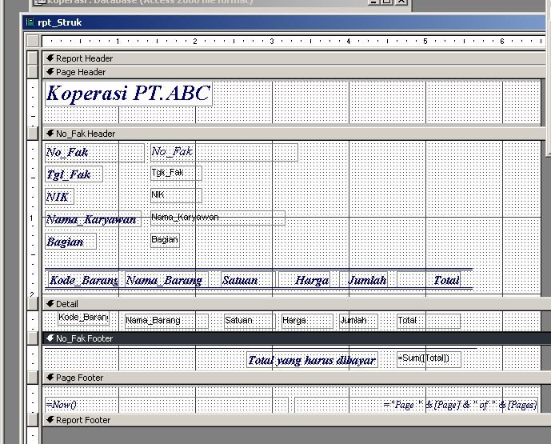
Simpan Report yang telah kita buat ini
Jika kita jalan kan Report saat ini maka akan muncul input box Enter parameter Value, Isi saja dengan F0001. Input box ini muncul disebabkan karena kita menjalankan report bukan dari form Penjualan.
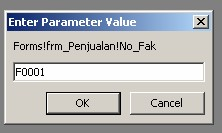
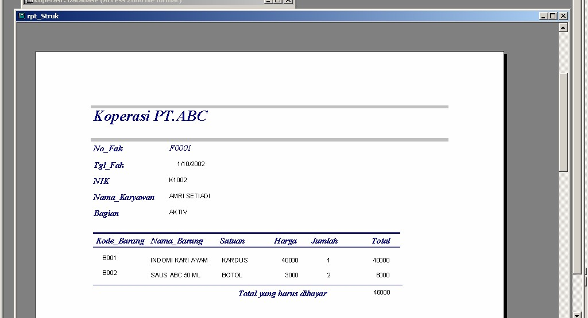
Report Struk digunakan untuk mencetak struk untuk karyawan. Berarti Report ini digunakan pada saat terjadinya transaksi penjualan. Untuk itu masuk ke mode design form penjualan, tambahkan satu command button untuk mencetak struk. Caranya yaitu klik command button pada tool bar, letakan di form akan muncul wizard, ikuti seperti dibawah ini
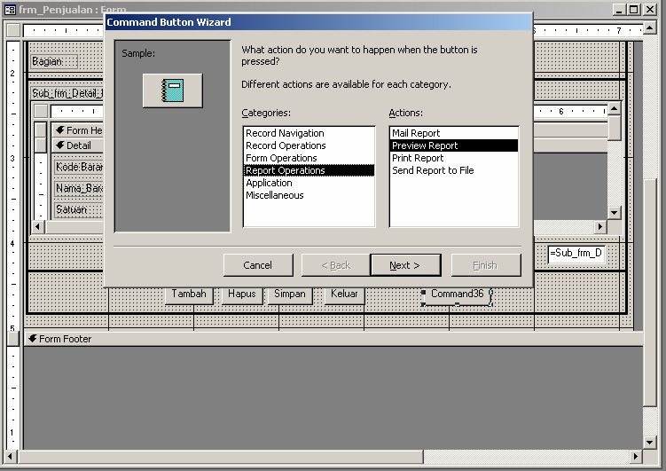
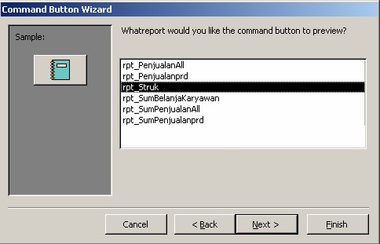
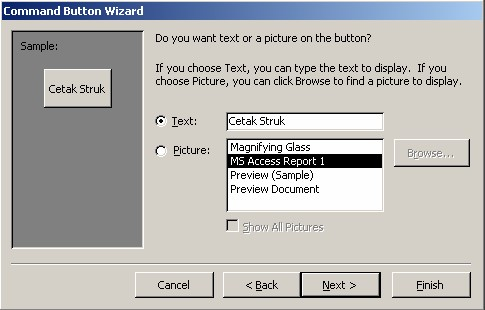
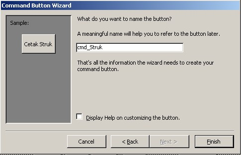
Terakhir klik finish, kemudian simpan form.
Sekarang mari kita buat Report Penjualan, Sebelum kita membuat Report Penjualan ini kita buat dulu form Laporan yang berfungsi sebagai interface untuk user menjalankan Report
Copyright © Herlan Lesmana
Created with the Freeware Edition of HelpNDoc: Free help authoring environment